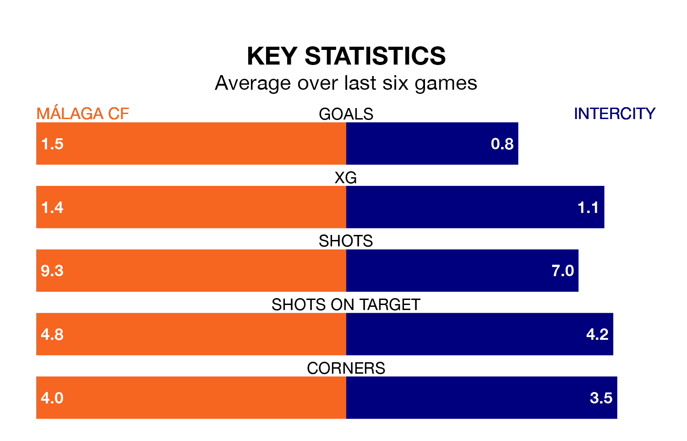

Málaga CF are heavy favourites to keep all three points at home in Sunday's early kick-off against Intercity.
Málaga, who sit fourth in Primera Division RFEF Group 2 with 27 games played, are priced at 1.6 to seal victory at the Estadio La Rosaleda.
Sitting five places and 14 points behind them in the table, Intercity are 5.0 to win with *Betting Company*, while the draw is at 3.5.
With 40 goals in 27 games so far this season, Málaga are scoring more than average in the league with 1.5 goals per game. And they are conceding fewer than average, letting in 19 goals at a rate of 0.7 per game.
Intercity, meanwhile, are average scorers, with 1.1 goals per game. They have also conceded 1.1 goals per game.
In Roberto Fernández Jaén, the home team have one of the league's most on-form strikers so far this season. He has notched 10 goals in 23 appearances, to sit second in the scoring charts.
His goal rate of one every 185 minutes is slightly quicker than that of Emilio Nsue López, the visitors' top scorer with a goal every 148 minutes, and a total of seven goals in 16 games.
Málaga are in good form in Primera Division RFEF Group 2, with four wins and a draw from their last six games.
With three wins and three losses over that period, Intercity's form is worse – they have taken nine points from 18, compared to Málaga's 13.
Málaga's last match was on Sunday, a 0-0 draw against Atlético Sanluqueño CF.
Intercity beat UD Melilla 1-0 last time out, also on March 10, with Nsue López on the scoresheet.
Updated: 15:10 (UTC), 15/03/24